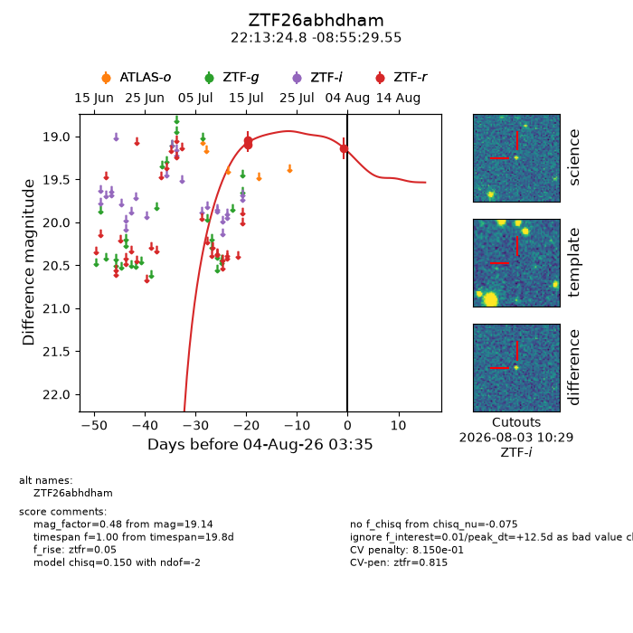
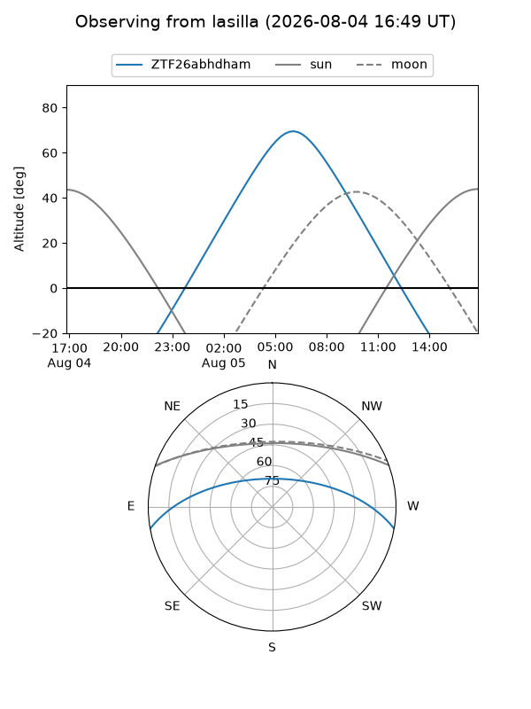
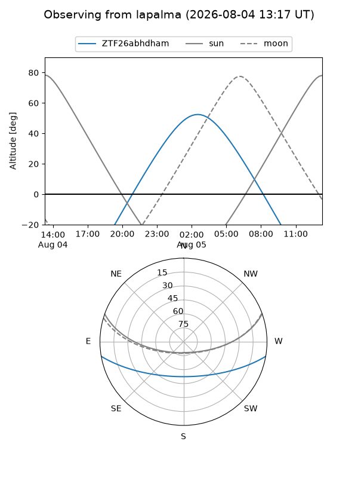
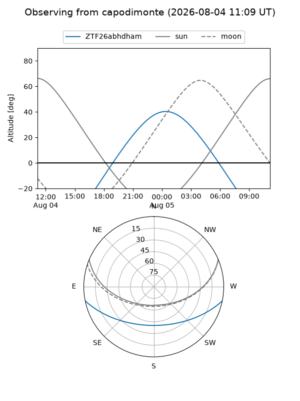
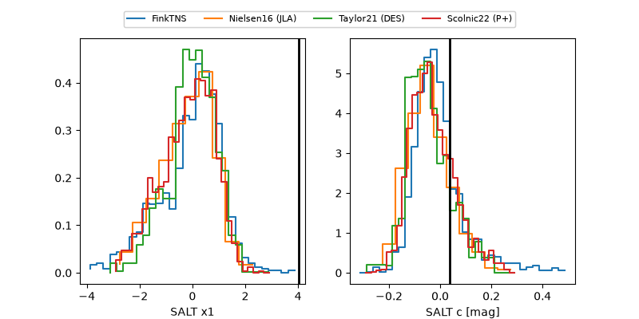

ZTF26abhdham
Target ZTF26abhdham at 2026-08-04 15:35
Aliases and brokers:
FINK-ZTF: ztf.fink-portal.org/ZTF26abhdham
Lasair-ZTF: lasair-ztf.lsst.ac.uk/objects/ZTF26abhdham
ALeRCE-ZTF: alerce.online/object/ZTF26abhdham
Direct TNS query: direct search
alt names
ZTF26abhdham (ztf,fink_ztf)
Coordinates:
equatorial (ra, dec) = 333.3532,-8.92488
equatorial (HMS+DMS) = 22:13:24.77,-08:55:29.55
galactic (l, b) = (51.3667,-48.51264)
Flags:
peak dt: +13.0
likely cv: !!
Photometry:
last ztfr=19.14
3 ztfr detections
Lightcurve

Visibility



Additional plots
